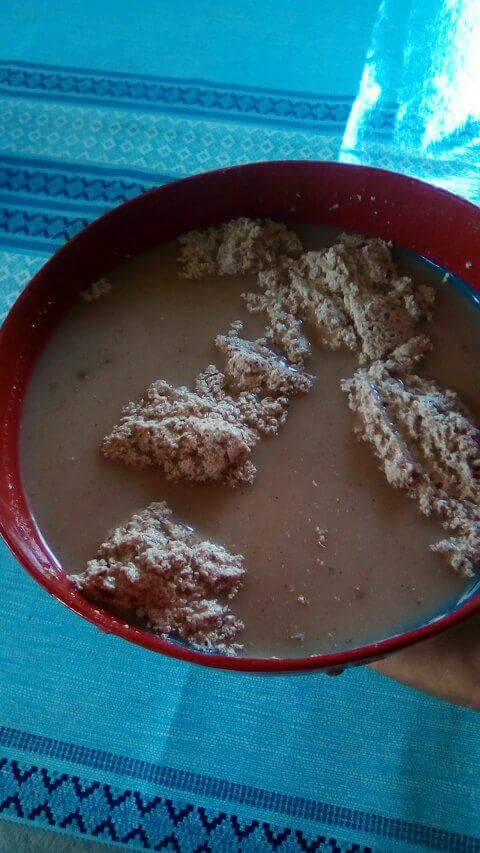

La comunidad de San Juan del Rio es uno de los 570 municipios con los cuales cuenta el estado de Oaxaca, se ubica en la región de los Valles Centrales, a 94.73 km de la ciudad capital; pertenece al distrito de Tlacolula.
Debe su nombre a la importancia que tiene el río Grande y sus afluentes dentro de la geografía del municipio; San Juan en honor a su santo patrono.
Reseña Histórica
La población es de origen indígena, aunque por su ubicación tenga cierta influencia de la etnia mixe, el pueblo que ha predominado hasta nuestros días es el de habla zapoteca. Se sabe que la población fue fundada en el año de 1417 y sus títulos de propiedad le fueron expedidos en el año de 1621.
Para el año 1882 la municipalidad contaba con 532 habitantes de los cuales 259 eran hombres y 237 mujeres.
Para esos mismos años se tiene el registro que los edificios públicos existentes era un templo, una casa curatal hecha de adobe y terrado, una casa municipal construida con pared de adobe y techo de tejas que data de 1661, una cárcel y un panteón construido en ese mismo año.
Localización
Se localiza en las coordenadas 16º53' de latitud norte y 96º09' de longitud oeste; a una altitud de 1,180 metros sobre el nivel del mar.

Colinda al norte con los municipios de San Pedro y San Pablo Ayutla, Distrito Mixe, Santo Domingo Albarradas y Santo Domingo Tepuxtepec; al sur con San Lorenzo Albarradas y San Pedro Quiatoni, mismo distrito; al oeste con San Lorenzo Albarradas; al este con San Pedro Quiatoni.
Tiene una extensión aproximada de 68.29 km², lo que representa el 0.068% de la superficie total del estado. Su superficie está conformada básicamente por cadenas montañosas. En la parte oriente de la población se ubican las montañas más grandes llamadas “Punto Trini” y cerro Costoche a 980 metros sobre el nivel del mar.
Sus principales afluentes son el río Grande, que nace en los terrenos de San Pablo y San Pedro Ayutla que atraviesa a la población, desembocando en el río Nejapa; además del río San Juan, río Trapiche y río Salado.
Población
La población, según datos del INEGI 2015 muestran que son un total de 1237 habitantes, en la actualidad la autoridad municipal anda aplicando un censo dentro de la población para saber cuántos habitantes en si viven dentro y fuera de la comunidad. La población es de origen zapoteca, especialmente los adultos mayores, a partir de la generación de cincuenta años, o menos son bilingües, aunque en la actualidad la lengua originaria se está perdiendo ya que a los niños ya no se le enseña bien el zapoteco solo algunas palabras y las mezclan con el español. Algunos de los pobladores viven fuera de la comunidad, buscando mejores oportunidades para vivir, ya sea en la capital o fuera del estado de origen, hay muchos otros en otros países, siendo el principal Estados Unidos.
Actividades económicas
Las principales actividades a las cuales se dedican los habitantes de la comunidad son a la agricultura, sobre todo al sistema milpa (maíz, frijol y calabaza), de igual manera a la siembra de maguey y al procesamiento de la misma en mezcal, que en este caso es su principal fuente de ingresos, muchos otros se dedican a la construcción, algunos trabajan en herrería y carpintería, y otros al comercio, las mujeres por su parte se dedican al tejido de blusas y batas típicas en la comunidad y la venta de estas en poblaciones cercanas a la comunidad.
Fiestas, Danzas y Tradiciones
Del 23 al 25 de Junio se lleva a cabo la fiesta religiosa en honor al Santo Patrón San Juan Bautista.
Son tradicionales los altares el día de Todos los Santos; en las festividades regionales los habitantes bailan las famosas quebraditas haciendo enlace de amistad con los pueblos circunvecinos.
También son tradicionales las calendas, bailes populares, actos religiosos y juegos pirotécnicos durante la celebración de las festividades.
Música
Se escucha la música de las tradicionales bandas de viento.Gastronomía
Alimentos
El platillo más típico y tradicional es el "frito", guisado hecho a base de carne de pollo o de guajolote (en ocasiones de carne de res), sazonado con exquisitas especias. También se acostumbra degustar los tamales, los elotes.
Bebidas
El atole como bebida, el champurrado, el chocolate de agua, el chocolate-atole y como bebida aperitiva está el popular mezcal que se produce en el municipio.
Gobierno
“El municipio solo cuenta con una cabecera política y administrativa.
El ayuntamiento está integrado por los siguientes miembros:
•Presidente Municipal
•Síndico Municipal
•6 Regidores (de Hacienda, de Educación, de Obras, de Higiene, de Mercado y de Deportes)
Además, el ayuntamiento para su desempeño se apoya de un Secretario Municipal y un Tesorero”.